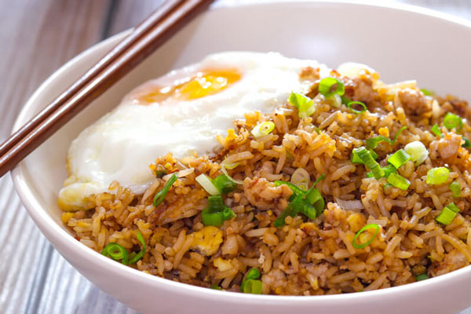

Nasi Goreng Sayur dan Telur
food image by google
Nasi goreng (Fried Rice) adalah sebuah makanan berupa nasi yang digoreng dan diaduk dalam minyak goreng, margarin atau mentega, biasanya ditambah kecap manis, bawang merah, bawang putih, asam jawa, lada dan bumbu-bumbu lainnya, seperti telur, ayam, dan kerupuk. Ada pula nasi goreng jenis lain yang dibuat bersama ikan asin yang juga populer di seluruh Indonesia. Nasi goreng juga dikenal sebagai masakan nasional Indonesia. Dari sekian banyak hidangan dalam khazanah Masakan Indonesia, hanya sedikit yang dapat dianggap sebagai makanan nasional sejati. Masakan nasional Indonesia ini tidak mengenal batasan kelas sosial. Nasi goreng dapat dinikmati secara sederhana di warung tepi jalan, gerobak penjaja keliling, hingga restoran dan meja prasmanan dalam pesta.
Resep Nasi Goreng